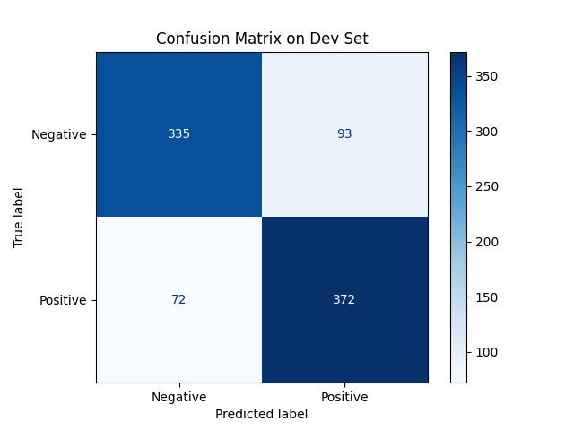
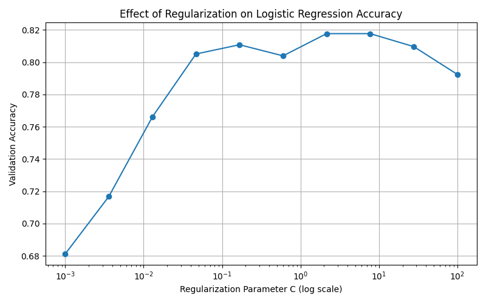

第7章: 機械学習#
本章では, Stanford Sentiment Treebank (SST) データセットを用い, 評判分析器 (ポジネガ分類器) を構築する. ここでは処理を簡略化するため, General Language Understanding Evaluation (GLUE) ベンチマークで配布されているSSTデータセットを用いる.
Warning
本章は, code-cell ではなく, Markdown のコードブロック内にコードを記述しているため, Google Colab上で直接実行できません.
60. データの入手・整形#
GLUEのウェブサイトからSST-2データセットを取得せよ。学習データ（train.tsv）と検証データ（dev.tsv）のぞれぞれについて、ポジティブ (1) とネガティブ (0) の事例数をカウントせよ.
# !wget https://dl.fbaipublicfiles.com/glue/data/SST-2.zip
# !unzip SST-2.zip
import pandas as pd
train_df = pd.read_table("SST-2/train.tsv", delimiter="\t")
dev_df = pd.read_table("SST-2/dev.tsv", delimiter="\t")
print("# train.tsv")
print(f"Positive: {(train_df["label"]==1).sum()}")
print(f"Negative: {(train_df["label"]==0).sum()}")
print("# dev.tsv")
print(f"Positive: {(dev_df["label"]==1).sum()}")
print(f"Negative: {(dev_df["label"]==0).sum()}")
# train.tsv
Positive: 37569
Negative: 29780
# dev.tsv
Positive: 444
Negative: 428
61. 特徴ベクトル#
Bag of Words (BoW) に基づき, 学習データ (train.tsv) および検証データ (dev.tsv) のテキストを特徴ベクトルに変換したい. ここで, ある事例のテキストの特徴ベクトルは, テキスト中に含まれる単語 (スペース区切りのトークン) の出現頻度で構成する. 例えば, "too loud , too goofy"というテキストに対応する特徴ベクトルは, 以下のような辞書オブジェクトで表現される.
{'too': 2, 'loud': 1, ',': 1, 'goofy': 1}
各事例はテキスト, 特徴ベクトル, ラベルを格納した辞書オブジェクトでまとめておく. 例えば, 先ほどの"too loud , too goofy"に対してラベル"0" (ネガティブ) が付与された事例は, 以下のオブジェクトで表現される.
{'text': 'too loud , too goofy', 'label': '0', 'feature': {'too': 2, 'loud': 1, ',': 1, 'goofy': 1}}
import pandas as pd
from collections import Counter
train_df = pd.read_table("SST-2/train.tsv", delimiter="\t")
dev_df = pd.read_table("SST-2/dev.tsv", delimiter="\t")
def make_bow_dict_list(df, text_col="sentence", label_col="label"):
result = []
for text, label in zip(df[text_col], df[label_col]):
if not isinstance(text, str) or text.strip()=="":
continue
tokens = text.split()
feat = dict(Counter(tokens))
result.append({
"text": text,
"label": str(label),
"feature": feat
})
return result
train_list = make_bow_dict_list(train_df)
dev_list = make_bow_dict_list(dev_df)
print(train_list[0])
{'text': 'hide new secretions from the parental units ', 'label': '0', 'feature': {'hide': 1, 'new': 1, 'secretions': 1, 'from': 1, 'the': 1, 'parental': 1, 'units': 1}}
62. 学習#
61で構築した学習データの特徴ベクトルを用いて, ロジスティック回帰モデルを学習せよ.
import pandas as pd
from collections import Counter
import numpy as np
from sklearn.linear_model import LogisticRegression
from sklearn.metrics import accuracy_score
import joblib
def make_bow_dict_list(df, text_col="sentence", label_col="label"):
data = []
for text, label in zip(df[text_col], df[label_col]):
if not isinstance(text, str) or text.strip() == "":
continue
tokens = text.split()
feat = dict(Counter(tokens))
data.append({
"text": text,
"label": str(label),
"feature": feat
})
return data
train_df = pd.read_table("SST-2/train.tsv", delimiter="\t")
dev_df = pd.read_table("SST-2/dev.tsv", delimiter="\t")
train_list = make_bow_dict_list(train_df)
dev_list = make_bow_dict_list(dev_df)
vocab = set()
for entry in train_list:
vocab.update(entry["feature"].keys())
vocab_list = sorted(vocab)
word2idx = {w:i for i,w in enumerate(vocab_list)}
def dict_list_to_matrix(dict_list, word2idx):
X = np.zeros((len(dict_list), len(word2idx)), dtype=int)
y = []
for i, entry in enumerate(dict_list):
for w, cnt in entry["feature"].items():
if w in word2idx:
X[i, word2idx[w]] = cnt
y.append(int(entry["label"]))
return X, np.array(y)
X_train, y_train = dict_list_to_matrix(train_list, word2idx)
X_dev, y_dev = dict_list_to_matrix(dev_list, word2idx)
model = LogisticRegression(max_iter=1000)
model.fit(X_train, y_train)
y_pred = model.predict(X_dev)
acc = accuracy_score(y_dev, y_pred)
print(f"Validation Accuracy: {acc}")
joblib.dump(model, "logistic_model.pkl")
joblib.dump(word2idx, "vocab.pkl")
Validation Accuracy: 0.8107798165137615
63. 予測#
学習したロジスティック回帰モデルを用い, 検証データの先頭の事例のラベル (ポジネガ) を予測せよ.また, 予測されたラベルが検証データで付与されていたラベルと一致しているか, 確認せよ.
import joblib
import numpy as np
import pandas as pd
from collections import Counter
model = joblib.load("logistic_model.pkl")
word2idx = joblib.load("vocab.pkl")
dev_df = pd.read_table("SST-2/dev.tsv", delimiter="\t")
text = dev_df["sentence"][0]
label = dev_df["label"][0]
tokens = text.split()
feature = dict(Counter(tokens))
X = np.zeros((1, len(word2idx)), dtype=int)
for w, cnt in feature.items():
if w in word2idx:
X[0, word2idx[w]] = cnt
pred = model.predict(X)
print(f"Text: {text}")
print(f"True: {label}")
print(f"Pred: {pred[0]}")
Text: it 's a charming and often affecting journey .
True: 1
Pred: 1
64. 条件付き確率#
学習したロジスティック回帰モデルを用い, 検証データの先頭の事例を各ラベル (ポジネガ) に分類するときの条件付き確率を求めよ.
import joblib
import numpy as np
import pandas as pd
from collections import Counter
model = joblib.load("logistic_model.pkl")
word2idx = joblib.load("vocab.pkl")
dev_df = pd.read_table("SST-2/dev.tsv", delimiter="\t")
text = dev_df["sentence"][0]
label = dev_df["label"][0]
tokens = text.split()
feature = dict(Counter(tokens))
X = np.zeros((1, len(word2idx)), dtype=int)
for w, cnt in feature.items():
if w in word2idx:
X[0, word2idx[w]] = cnt
pred = model.predict(X)
proba = model.predict_proba(X)
print(f"Text: {text}")
print(f"True: {label}")
print(f"Pred: {pred[0]}")
print(f"Class Prob: {proba[0]}")
print(f"→ P(nega=0): {proba[0][0]:.4f}, P(posi=1): {proba[0][1]}")
Text: it 's a charming and often affecting journey .
True: 1
Pred: 1
Class Prob: [0.0042542 0.9957458]
→ P(nega=0): 0.0043, P(posi=1): 0.9957457983179792
65. テキストのポジネガの予測#
与えられたテキストのポジネガを予測するプログラムを実装せよ. 例えば、テキストとして"the worst movie I 've ever seen"を与え, ロジスティック回帰モデルの予測結果を確認せよ.
import joblib
import numpy as np
from collections import Counter
model = joblib.load("logistic_model.pkl")
word2idx = joblib.load("vocab.pkl")
def sentimentAnalyser(text, model, word2idx):
tokens = text.split()
feature = dict(Counter(tokens))
X = np.zeros((1, len(word2idx)), dtype=int)
for w, cnt in feature.items():
if w in word2idx:
X[0, word2idx[w]] = cnt
pred = model.predict(X)
senti = "Positive" if pred == 1 else "Negative"
return senti
text = "the worst movie I 've ever seen"
senti = sentimentAnalyser(text, model, word2idx)
print(f"\"{text}\" is {senti}.")
"the worst movie I 've ever seen" is Negative.
66. 混同行列の作成#
学習したロジスティック回帰モデルの検証データにおける混同行列 (confusion matrix) を求めよ.
import joblib
import numpy as np
import pandas as pd
from collections import Counter
from sklearn.metrics import confusion_matrix, ConfusionMatrixDisplay
import matplotlib.pyplot as plt
model = joblib.load("logistic_model.pkl")
word2idx = joblib.load("vocab.pkl")
dev_df = pd.read_table("SST-2/dev.tsv", delimiter="\t")
texts = dev_df["sentence"]
labels = dev_df["label"]
X = np.zeros((len(texts), len(word2idx)), dtype=int)
for i, text in enumerate(texts):
tokens = text.split()
feature = dict(Counter(tokens))
for w, cnt in feature.items():
if w in word2idx:
X[i, word2idx[w]] = cnt
y_true = labels.to_numpy()
y_pred = model.predict(X)
cm = confusion_matrix(y_true, y_pred)
disp = ConfusionMatrixDisplay(confusion_matrix=cm, display_labels=["Negative", "Positive"])
disp.plot(cmap="Blues", values_format='d')
plt.title("Confusion Matrix on Dev Set")
plt.show()
plt.savefig("c.png")

67. 精度の計測#
学習したロジスティック回帰モデルの正解率, 適合率, 再現率, F1スコアを, 学習データおよび検証データ上で計測せよ.
import joblib
import numpy as np
import pandas as pd
from collections import Counter
from sklearn.metrics import accuracy_score, precision_score, recall_score, f1_score
model = joblib.load("logistic_model.pkl")
word2idx = joblib.load("vocab.pkl")
def make_features(df, word2idx):
texts = df["sentence"]
labels = df["label"]
X = np.zeros((len(texts), len(word2idx)), dtype=int)
for i, text in enumerate(texts):
tokens = text.split()
feature = dict(Counter(tokens))
for w, cnt in feature.items():
if w in word2idx:
X[i, word2idx[w]] = cnt
return X, labels.to_numpy()
train_df = pd.read_table("SST-2/train.tsv", delimiter="\t")
dev_df = pd.read_table("SST-2/dev.tsv", delimiter="\t")
X_train, y_train = make_features(train_df, word2idx)
X_dev, y_dev = make_features(dev_df, word2idx)
y_train_pred = model.predict(X_train)
y_dev_pred = model.predict(X_dev)
def print_metrics(y_true, y_pred, name=""):
print(f"=== {name} ===")
print(f"Accuracy : {accuracy_score(y_true, y_pred):.4f}")
print(f"Precision: {precision_score(y_true, y_pred):.4f}")
print(f"Recall : {recall_score(y_true, y_pred):.4f}")
print(f"F1 Score : {f1_score(y_true, y_pred):.4f}\n")
print_metrics(y_train, y_train_pred, name="Train")
print_metrics(y_dev, y_dev_pred, name="Dev")
=== Train ===
Accuracy : 0.9422
Precision: 0.9428
Recall : 0.9544
F1 Score : 0.9485
=== Dev ===
Accuracy : 0.8108
Precision: 0.8000
Recall : 0.8378
F1 Score : 0.8185
68. 特徴量の重みの確認#
学習したロジスティック回帰モデルの中で, 重みの高い特徴量トップ20と, 重みの低い特徴量トップ20を確認せよ.
import joblib
import numpy as np
model = joblib.load("logistic_model.pkl")
word2idx = joblib.load("vocab.pkl")
coefs = model.coef_[0]
idx2word = {i: w for w, i in word2idx.items()}
top_pos_indices = np.argsort(coefs)[-20:][::-1]
top_pos_words = [(idx2word[i], coefs[i]) for i in top_pos_indices]
top_neg_indices = np.argsort(coefs)[:20]
top_neg_words = [(idx2word[i], coefs[i]) for i in top_neg_indices]
print("=== Top 20 Positive Words ===")
for word, weight in top_pos_words:
print(f"{word:<15} {weight:.4f}")
print("\n=== Top 20 Negative Words ===")
for word, weight in top_neg_words:
print(f"{word:<15} {weight:.4f}")
refreshing 3.4152
remarkable 3.4090
powerful 3.2028
hilarious 3.1706
beautiful 3.0031
wonderful 2.9567
prose 2.9239
appealing 2.8553
terrific 2.8447
treat 2.7826
enjoyable 2.7641
charmer 2.7494
vividly 2.7119
likable 2.6818
solid 2.6587
charming 2.6485
half-bad 2.6182
fascinating 2.6124
impressive 2.5906
intriguing 2.5776
=== Top 20 Negative Words ===
lacking -4.3342
lacks -4.0458
worst -3.9947
devoid -3.6436
mess -3.5915
failure -3.5565
stupid -3.3355
bore -3.2426
flat -3.2277
depressing -3.1854
loses -3.1598
waste -3.1365
hardly -3.0391
lack -3.0281
squanders -3.0261
none -3.0259
poor -2.9788
pointless -2.9419
unfortunately -2.9370
lousy -2.9102
69. 正則化パラメータの変更#
ロジスティック回帰モデルを学習するとき, 正則化の係数 (ハイパーパラメータ) を調整することで, 学習時の適合度合いを制御できる.正則化の係数を変化させながらロジスティック回帰モデルを学習し, 検証データ上の正解率を求めよ.実験の結果は, 正則化パラメータを横軸, 正解率を縦軸としたグラフにまとめよ.
import pandas as pd
import numpy as np
from sklearn.linear_model import LogisticRegression
from sklearn.metrics import accuracy_score
import matplotlib.pyplot as plt
from collections import Counter
def make_bow_dict_list(df, text_col="sentence", label_col="label"):
data = []
for text, label in zip(df[text_col], df[label_col]):
if not isinstance(text, str) or text.strip() == "":
continue
tokens = text.split()
feat = dict(Counter(tokens))
data.append({"text": text, "label": str(label), "feature": feat})
return data
def dict_list_to_matrix(dict_list, word2idx):
X = np.zeros((len(dict_list), len(word2idx)), dtype=int)
y = []
for i, entry in enumerate(dict_list):
for w, cnt in entry["feature"].items():
if w in word2idx:
X[i, word2idx[w]] = cnt
y.append(int(entry["label"]))
return X, np.array(y)
train_df = pd.read_table("SST-2/train.tsv", delimiter="\t")
dev_df = pd.read_table("SST-2/dev.tsv", delimiter="\t")
train_list = make_bow_dict_list(train_df)
dev_list = make_bow_dict_list(dev_df)
vocab = set()
for entry in train_list:
vocab.update(entry["feature"].keys())
vocab_list = sorted(vocab)
word2idx = {w: i for i, w in enumerate(vocab_list)}
X_train, y_train = dict_list_to_matrix(train_list, word2idx)
X_dev, y_dev = dict_list_to_matrix(dev_list, word2idx)
C_values = np.logspace(-3, 2, 10)
accuracies = []
for C in C_values:
model = LogisticRegression(C=C, max_iter=1000)
model.fit(X_train, y_train)
y_pred = model.predict(X_dev)
acc = accuracy_score(y_dev, y_pred)
accuracies.append(acc)
print(f"C={C:.4f}, Accuracy={acc:.4f}")
plt.figure(figsize=(8, 5))
plt.plot(C_values, accuracies, marker="o")
plt.xscale("log")
plt.xlabel("Regularization Parameter C (log scale)")
plt.ylabel("Validation Accuracy")
plt.title("Effect of Regularization on Logistic Regression Accuracy")
plt.grid(True)
plt.tight_layout()
plt.show()
plt.savefig("cm.png")
